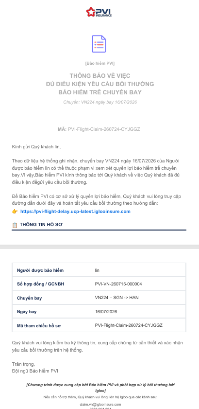

01
Chi trả khi trễ chuyến
Chi trả quyền lợi khi Chuyến bay được bảo hiểm trễ từ 120 phút liên tục trở lên tại Sân bay Khởi hành so với Thời gian khởi hành theo lịch trình.
NHẬN NGAY 500.000đ
khi chuyến bay trễ từ 120 phút
ĐA DẠNG HÃNG BAY
Áp dụng chuyến bay khởi hành từ Việt Nam
BỒI THƯỜNG ONLINE
Nhận tiền trong 07 ngày làm việc
Bảo hiểm áp dụng cho Chuyến bay theo lịch trình trong lãnh thổ Việt Nam hoặc xuất phát từ Việt Nam.
Bảo hiểm PVI chi trả 500.000 VND / chuyến / người khi chuyến bay bị trễ từ 120 phút liên tục trở lên tại Sân bay Khởi hành.
Chi trả quyền lợi khi Chuyến bay được bảo hiểm trễ từ 120 phút liên tục trở lên tại Sân bay Khởi hành so với Thời gian khởi hành theo lịch trình.
Khi Hãng hàng không hoặc Atadi bố trí chuyến bay thay thế cùng lộ trình, quyền lợi vẫn được chi trả nếu Hãng đã thông báo hợp lệ.
Thời gian khởi hành thực tế căn cứ thông tin công bố của Tổ chức cung cấp dữ liệu chuyến bay (FlightRadar24) theo quy định trong Hợp đồng / Giấy chứng nhận bảo hiểm.
Bảo hiểm PVI xem xét, giải quyết và trả tiền bảo hiểm trong vòng 7 ngày làm việc kể từ ngày nhận đủ hồ sơ yêu cầu bồi thường hợp lệ.
Cách tính thời gian trễ: tính theo phút hoặc giờ, từ “Thời gian khởi hành theo lịch trình” đến “Thời gian khởi hành thực tế” của Chuyến bay được bảo hiểm hoặc Chuyến bay thay thế - tùy thời điểm nào đến trước. Quyền lợi chỉ phát sinh khi thời gian trễ đạt hoặc vượt 120 phút liên tục tại Sân bay Khởi hành.
Khi phát sinh sự kiện bảo hiểm, Bảo hiểm PVI tự động gửi email thông báo kèm link khai báo. Quý khách nộp và theo dõi hồ sơ ngay trên Cổng bồi thường trực tuyến - không cần nộp hồ sơ giấy. Hồ sơ được gửi trong thời hạn 01 năm kể từ ngày xảy ra sự kiện bảo hiểm; Bảo hiểm PVI xem xét và chi trả trong vòng 07 ngày làm việc kể từ khi nhận đủ hồ sơ hợp lệ.
CMND/CCCD hoặc Hộ chiếu - ảnh chụp rõ nét của hành khách đang khai báo.
Thông báo thay đổi / hoãn / huỷ chuyến chính thức từ hãng hàng không.
Thẻ lên máy bay (boarding pass) gốc của chuyến bay ban đầu, đúng hành khách đang khai báo.
Tài khoản ngân hàng để nhận tiền bồi thường.
Email đã đăng ký với hợp đồng - dùng nhận mã OTP đăng nhập.
Truy cập Cổng bằng link trong email thông báo, hoặc quét mã QR bên cạnh.

Với booking đặt chỗ có nhiều hành khách: Trên Cổng bồi thường sẽ hiển thị hồ sơ bồi thường theo từng khách hàng. Quý khách vui lòng khai báo lần lượt cho từng người để đảm bảo rõ ràng về thông tin và có cơ sở cho Bảo hiểm tiếp nhận hồ sơ đầy đủ.
Hồ sơ đã nộp thành công và đang được thẩm định.
Hồ sơ đã được phê duyệt, đang tiến hành chi trả về tài khoản.
Hồ sơ đã kết thúc xử lý, xem kết luận trong chi tiết hồ sơ.
Bảo hiểm PVI sẽ không chi trả quyền lợi bảo hiểm cho Người được bảo hiểm trong các trường hợp sau:
Khi lựa chọn tham gia Bảo hiểm DelayCare và tích vào ô xác nhận tại bước mua bảo hiểm trên Atadi.vn, Quý khách xác nhận các nội dung sau:
Bảo hiểm PVI bảo hiểm cho công dân Việt Nam hoặc người nước ngoài cư trú hợp pháp tại Việt Nam, từ 02 đến 85 tuổi tại thời điểm bắt đầu thời hạn bảo hiểm, có tên trên Vé máy bay của Chuyến bay được bảo hiểm.
Không được. Quý khách bắt buộc phải mua bảo hiểm trước ít nhất 24 giờ so với Thời gian khởi hành theo lịch trình. Đồng thời, Quý khách cần có tên trên vé máy bay và thông tin giấy tờ tùy thân dùng để mua bảo hiểm phải trùng khớp với thông tin mua vé.
Không được. Chương trình bảo hiểm chỉ áp dụng cho Người được bảo hiểm trong độ tuổi từ 02 đến 85 tuổi. Do đó, người thân của Quý khách 1 tuổi và 86 tuổi không thuộc đối tượng bảo hiểm.
Có. Bảo hiểm PVI bảo hiểm cho trẻ dưới 12 tuổi khi đi cùng một người từ 18 tuổi trở lên, được ủy quyền hợp pháp và được bảo hiểm trong cùng một Hợp đồng / Giấy chứng nhận bảo hiểm.
Không được. Trẻ em dưới 12 tuổi bắt buộc phải đi cùng một người từ 18 tuổi trở lên (được ủy quyền hợp pháp) và phải tham gia trong cùng một Hợp đồng / Giấy chứng nhận bảo hiểm với người đi kèm.
Được. Quý khách là người nước ngoài cư trú hợp pháp tại Việt Nam, từ 02 đến 85 tuổi và có tên trên vé máy bay đều thuộc đối tượng được tham gia bảo hiểm.
Bảo hiểm PVI áp dụng cho Chuyến bay theo lịch trình trong lãnh thổ Việt Nam hoặc xuất phát từ Việt Nam, được ghi nhận trên Hợp đồng / Giấy chứng nhận bảo hiểm.
Không được. Bảo hiểm loại trừ trách nhiệm đối với các sự cố chậm trễ hoặc gián đoạn trên chuyến bay thuê bao, cho thuê, khai thác cá nhân hoặc chuyến bay không theo lịch trình.
Quý khách được hoàn trả 100% phí bảo hiểm đã đóng, nếu văn bản đề nghị chấm dứt Hợp đồng / Giấy chứng nhận bảo hiểm được gửi trước Thời gian khởi hành theo lịch trình ít nhất 24 giờ. Mức hoàn phí này áp dụng không phân biệt bên đề nghị chấm dứt là Quý khách hay Bảo hiểm PVI.
Nếu Quý khách đề nghị chấm dứt khi thời gian còn lại dưới 24 giờ so với Thời gian khởi hành, Bảo hiểm PVI không hoàn trả bất cứ khoản phí bảo hiểm nào. Sau khi Hợp đồng chấm dứt, Bảo hiểm PVI cũng không chịu trách nhiệm với bất kỳ yêu cầu bồi thường nào.
Không. Nếu Quý khách tham gia nhiều hơn 01 hợp đồng bảo hiểm PVI cho cùng một chuyến bay, Bảo hiểm PVI chỉ chi trả theo 01 Hợp đồng duy nhất. Hệ thống xét duyệt tự động sẽ loại các yêu cầu bồi thường trùng lặp.
Thời gian trì hoãn tối thiểu để phát sinh quyền lợi bảo hiểm là 120 phút (02 tiếng), áp dụng với tất cả các hãng hàng không. Khi đạt đủ điều kiện trễ này, Quý khách được chi trả Số tiền bảo hiểm 500.000 VND / chuyến / người.
Không được chi trả. Bảo hiểm loại trừ trách nhiệm đối với các chuyến bay có thời gian chậm dưới mức tối thiểu. Theo Giấy chứng nhận bảo hiểm, thời gian trì hoãn phải đạt từ 120 phút trở lên.
Thời gian trễ được tính từ “Thời gian khởi hành theo lịch trình” đến “Thời gian khởi hành thực tế” - là thời điểm máy bay bắt đầu lăn bánh di chuyển ra đường bay để cất cánh, của Chuyến bay được bảo hiểm hoặc Chuyến bay thay thế, tùy thời điểm nào đến trước.
Giờ cất cánh thực tế được xác định căn cứ vào hệ thống FlightRadar24. Trường hợp có sai lệch giữa các nguồn dữ liệu, dữ liệu của FlightRadar24 được ưu tiên sử dụng làm căn cứ chính thức để xét duyệt bồi thường.
Với chuyến bay ban đầu: Quý khách không cần tự chứng minh. Bảo hiểm PVI xác minh tự động căn cứ dữ liệu do Tổ chức cung cấp dữ liệu chuyến bay (FlightRadar24) công bố, theo quy định tại Hợp đồng / Giấy chứng nhận bảo hiểm.
Với chuyến bay thay thế bởi Hãng hàng không hoặc Atadi: Quý khách vui lòng lựa chọn Quyền lợi Chuyến bay thay thế và cung cấp bổ sung thông tin Chuyến bay mới để Bảo hiểm PVI có cơ sở ghi nhận cho bộ hồ sơ bồi thường.
Mốc tính trễ chuyến lấy theo giờ mới. Trường hợp hãng hàng không thông báo cập nhật thời gian khởi hành trước thời điểm ban đầu ít nhất 24 giờ, thời gian mới này được xem là Thời gian khởi hành theo lịch trình.
Có. Bảo hiểm PVI vẫn chi trả nếu đó là Chuyến bay thay thế do Hãng hàng không hoặc Atadi thu xếp, cùng Nơi đi, Nơi đến và Mã đặt chỗ. Trường hợp chuyến bay được đổi theo yêu cầu riêng của Quý khách, quyền lợi không được áp dụng.
Quý khách được bồi thường. Thời gian khởi hành thực tế trễ 2 tiếng 30 phút (150 phút) so với lịch trình ban đầu, đã vượt mức trễ tối thiểu 120 phút.
Quý khách được bồi thường. Theo Giấy chứng nhận bảo hiểm, thời gian trì hoãn tối thiểu để phát sinh quyền lợi là 120 phút. Chuyến bay của Quý khách trễ đúng 120 phút (từ 09h00 đến 11h00) nên đã đủ điều kiện nhận bồi thường.
Quý khách được bồi thường. Sự cố kỹ thuật của hãng bay dẫn đến chậm chuyến 3 tiếng (180 phút) nằm trong phạm vi chi trả bảo hiểm. Hệ thống đối chiếu dữ liệu từ FlightRadar24 và giải quyết bồi thường tự động.
Quý khách được bồi thường. Quy tắc bảo hiểm quy định “Thời gian khởi hành thực tế” được tính từ thời điểm máy bay bắt đầu lăn bánh ra đường bay để cất cánh. Do đó, dù Quý khách đã lên máy bay và cửa đã đóng lúc 10h00, thời điểm máy bay thực tế lăn bánh là 12h30 - trễ 150 phút so với lịch trình, vượt mốc tối thiểu 120 phút và nguyên nhân không thuộc điểm loại trừ.
Quý khách được bồi thường. Chuyến bay mới do hãng chủ động thu xếp được xem là Chuyến bay thay thế. Thời gian trễ tính từ 08h00 đến 11h00 là 3 tiếng (180 phút), đáp ứng điều kiện trễ tối thiểu 120 phút. Quý khách cần giữ thông báo đổi chuyến từ hãng làm bằng chứng.
Quý khách không được bồi thường. Dù chuyến bay mới do hãng xếp được tính là Chuyến bay thay thế, thời gian trễ từ 12h00 đến 13h00 chỉ là 60 phút - chưa đạt điều kiện tối thiểu 120 phút để được chi trả.
Quý khách không được bồi thường. Chuyến bay thay thế không áp dụng cho trường hợp Quý khách tự ý đổi vé hoặc tự thu xếp mua vé mới. Việc tự đổi vé thuộc điểm loại trừ do không lên máy bay theo đúng lịch trình đã mua.
Quý khách không được bồi thường. Dù thời gian trễ thực tế từ 10h00 đến 13h00 là 3 tiếng (180 phút, vượt mốc 120 phút), nguyên nhân chậm chuyến là do yêu cầu tạm giữ, kiểm tra an ninh hoặc thủ tục hải quan từ cơ quan quản lý nhà nước / sân bay. Trường hợp này thuộc điểm loại trừ trách nhiệm bảo hiểm.
Bảo hiểm PVI không chi trả trong bốn nhóm trường hợp: chuyến bay không hợp lệ; sự kiện bất khả kháng & an ninh; lỗi hoặc hành vi của hành khách; và không đủ căn cứ chi trả. Quý khách xem danh sách đầy đủ tại mục Các điểm loại trừ.
Không được bồi thường. Việc Quý khách đến sân bay muộn dẫn đến không đăng ký lên máy bay hoặc không lên máy bay theo lịch trình thuộc điều khoản loại trừ trách nhiệm bảo hiểm.
Không được bồi thường. Các sự cố phát sinh từ việc giấy tờ đi lại không hợp lệ, hoặc do sự cố về hộ chiếu, thị thực (visa) đều thuộc điểm loại trừ bảo hiểm.
Không được bồi thường. Sự chậm chuyến do bị tạm giữ, cách ly, thủ tục hải quan, nhập cảnh hoặc các yêu cầu an ninh từ cơ quan quản lý nhà nước / sân bay thuộc điểm loại trừ.
Không được bồi thường. Bảo hiểm loại trừ các trường hợp chậm chuyến do thiên tai đã được công bố hoặc dự báo công khai trước thời điểm Quý khách mua bảo hiểm.
Không được bồi thường. Trường hợp chuyến bay bị chậm do đình công, bạo động tại sân bay đã được thông báo rộng rãi hoặc Quý khách đã biết trước thời điểm mua bảo hiểm sẽ thuộc điểm loại trừ.
Không được chi trả. Bảo hiểm loại trừ mọi trường hợp chậm chuyến phát sinh trực tiếp hoặc gián tiếp từ Dịch bệnh đã được công bố.
Không được bồi thường. Sự chậm chuyến do việc đóng cửa vùng trời hoặc sân bay theo quyết định của cơ quan chính phủ, với nguyên nhân không xuất phát từ sự cố kỹ thuật, sẽ bị loại trừ bảo hiểm.
Không được bồi thường. Tất cả tổn thất phát sinh từ việc hãng hàng không bị mất khả năng thanh toán, giải thể hoặc vỡ nợ tài chính đều nằm trong danh mục loại trừ.
Không được bồi thường. Bảo hiểm loại trừ chi trả đối với trường hợp Thẻ lên máy bay của Quý khách bị rách rời, sửa đổi, chắp vá hoặc không còn hiệu lực.
Khi FlightRadar24 ghi nhận chuyến bay trễ từ 120 phút, hệ thống tự động gửi email kèm đường dẫn khai báo cho Quý khách. Sau khi Quý khách nộp hồ sơ, hệ thống đối chiếu dữ liệu tên, chuyến bay và số tài khoản. Nếu hợp lệ, hồ sơ chuyển sang trạng thái “Được chấp thuận chi trả”. Trường hợp có đổi chuyến, hồ sơ sẽ chuyển sang xử lý thủ công.
Hồ sơ gồm: Giấy yêu cầu trả tiền bảo hiểm; ảnh chụp giấy tờ tùy thân (CMND / CCCD hoặc Hộ chiếu); vé máy bay hoặc thẻ lên máy bay của chuyến bay ban đầu; xác nhận thay đổi / hoãn / hủy chuyến từ hãng hàng không (nếu có); tài khoản ngân hàng nhận tiền; và email đã đăng ký với hợp đồng để nhận mã OTP.
Quý khách nộp trực tuyến qua Cổng bồi thường bằng cách nhấp đường dẫn trong email hoặc quét mã QR trên Giấy chứng nhận bảo hiểm. Bảo hiểm PVI tiếp nhận chứng từ dưới dạng ảnh chụp hoặc bản scan - chi tiết tại mục Bồi thường.
Quý khách khai báo trực tuyến trên Cổng bồi thường, truy cập bằng đường dẫn trong email Bảo hiểm PVI gửi tự động hoặc quét mã QR tại mục Bồi thường. Bảo hiểm PVI không yêu cầu nộp hồ sơ giấy.
Quý khách đăng nhập bằng email đã đăng ký với hợp đồng; hệ thống gửi mã OTP về chính hộp thư đó để xác thực. Bảo hiểm PVI không yêu cầu Quý khách tạo mật khẩu riêng.
Quý khách vui lòng kiểm tra hộp thư rác / quảng cáo trước. Quý khách cũng có thể chủ động mở Cổng bồi thường bằng mã QR hoặc nút tại mục Bồi thường và đăng nhập bằng email đã đăng ký. Nếu vẫn chưa thấy hợp đồng, vui lòng liên hệ Bảo hiểm PVI qua hotline hoặc email hỗ trợ bên dưới.
Quý khách có tối đa 01 năm kể từ ngày xảy ra sự kiện bảo hiểm để nộp và bổ sung hồ sơ. Sau khi Quý khách cung cấp đầy đủ hồ sơ hợp lệ, số tiền bồi thường được chuyển khoản trực tiếp vào tài khoản ngân hàng của Quý khách trong vòng 07 ngày làm việc.
Quý khách không mất quyền lợi ngay. Khi hệ thống ghi nhận chuyến bay trễ từ 120 phút trở lên, email thông báo kèm đường dẫn / mã QR bồi thường được gửi tự động cho Quý khách. Thời hạn để truy cập và hoàn thiện hồ sơ là 01 năm kể từ ngày xảy ra sự kiện trễ chuyến.
Tuy nhiên, nếu Quý khách để quá thời hạn 01 năm này mà không có lý do bất khả kháng hợp lệ, Bảo hiểm PVI có quyền từ chối chi trả bồi thường.
Trên Cổng bồi thường sẽ hiển thị hồ sơ bồi thường theo từng khách hàng. Quý khách vui lòng khai báo lần lượt cho từng người để đảm bảo rõ ràng về thông tin và có cơ sở cho Bảo hiểm PVI tiếp nhận hồ sơ đầy đủ.
Với con nhỏ dưới 18 tuổi (bao gồm trẻ dưới 12 tuổi): Quý khách - với tư cách cha / mẹ hoặc người giám hộ hợp pháp đi cùng trong Hợp đồng - hoàn toàn được đại diện kê khai và nhận tiền bồi thường trực tiếp vào tài khoản ngân hàng của mình.
Với người thân đã trưởng thành (vợ / chồng, bố mẹ): Hệ thống bồi thường tự động sẽ đối chiếu tên chủ tài khoản ngân hàng với tên từng Người được bảo hiểm. Do đó, tiền bồi thường nên được chuyển vào tài khoản chính chủ của từng người. Trường hợp Quý khách muốn nhận thay cho toàn bộ người lớn trong gia đình, hồ sơ cần có văn bản ủy quyền hợp pháp để chuyển bộ phận giải quyết thủ công.
Quý khách không nên nhận toàn bộ tiền vào tài khoản cá nhân qua hệ thống tự động, vì hệ thống sẽ đối chiếu tên chủ tài khoản ngân hàng khớp với tên từng Người được bảo hiểm. Với bạn bè, đồng nghiệp (người lớn độc lập), mỗi cá nhân nên cung cấp số tài khoản chính chủ của mình trên Cổng bồi thường để được duyệt chi trả tự động nhanh chóng.
Nếu Quý khách muốn đại diện nhận thay cho cả nhóm, hồ sơ sẽ phải xử lý thủ công và bắt buộc cung cấp thêm Giấy ủy quyền hợp pháp từ từng người.
Quý khách theo dõi tại mục “Các yêu cầu bồi thường” trên Cổng bồi thường, với ba trạng thái: Đang xử lý → Đang xử lý thanh toán → Hoàn tất · Đóng.
Bảo hiểm PVI hỗ trợ tra cứu quyền lợi, hướng dẫn hồ sơ và tiếp nhận yêu cầu bồi thường cho khách hàng mua bảo hiểm trên Atadi.vn.